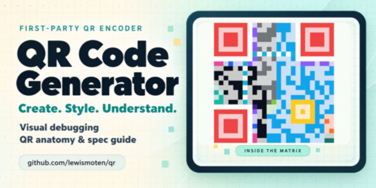

QR Code Generator
Creator and inspector

A browser tool backed by my own ES module for QR codes, with mixed segmentation, versions 1-40, Reed-Solomon correction, mask selection, and structural inspection.
Executive summary
Why it exists
Most QR tools only make a code. I wanted one that also lets you look at how the code is built.
Outcome
A live generator at qr.lewismoten.com and an encoder module you can import on its own. The README names git.lewismoten.com as the canonical repository.
My role
Author and maintainer.
Technical overview
How it works
A first-party QR encoder, published as a stable, self-contained ES module (dist/qr.min.js) that the app reuses and anyone else can download or import. The app covers mixed segmentation, versions 1 through 40, Reed-Solomon error correction, mask selection, and structural inspection. Browser code is organized into app and encoder folders with separate JavaScript and CSS entry points.
Hard parts
Staying small. The project pins its single development dependency and has a verify command that runs source linting, tests with coverage thresholds, the production build, and asset-budget checks. The size audit estimates transferred HTML, CSS, and JavaScript using the same Brotli quality as the local server.